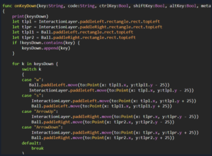
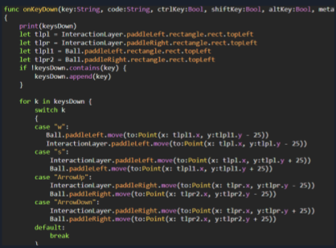

The code above is how we added static to our game allowing us to run multiple instances of our game by saving the position of the game object and moving it on the other instances as well as the code that controls the movements of the paddles using the w, s, and arrow keys.
More advanced version of the traditional game pong. Pong is a game where players move a paddle to prevent the ball from reaching the side their paddle is on. The game pong was a simple starting point which we thought we could bridge off from. Our ideas ranged from different power-ups to adding a top down view to pong. The original pong was just a simple and lacked a distinctive background or much aesthetics, hence we decided to add a space background. The additions of UFOs and lasers.
Last year the ISP I created was based on the game pong. We chose to base our ISP because a lot of the skills we learned applied in this game and it was on the IGIS server. We prefered the visuals on the IGIS server and with our skill set made for this game we chose it. The motivation for this were the mission we did and how well they prepared us for making games with moving objects and bouncing.
Overall the game did function however relying on the game breaking to show the end screen proved to be rather inconsistent in testing. We also had a variety of problem when using static since there was the constant error of forgetting to static many of the crucial parts of the game including the paddle and the ball. We were able to solve these issues by testing individual parts of the code and narrowing down where the issue was.
Back to my Computer Science 1 portfolio